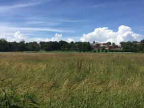
 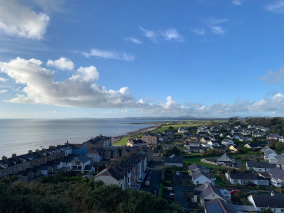
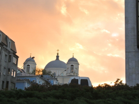
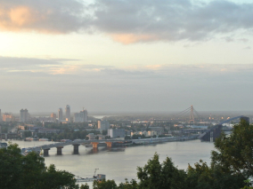
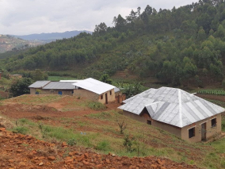
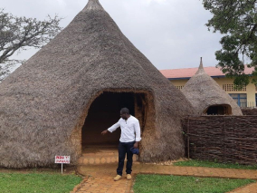
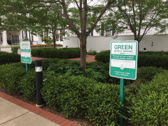
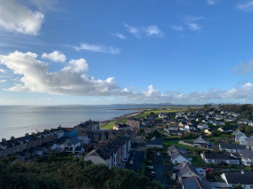
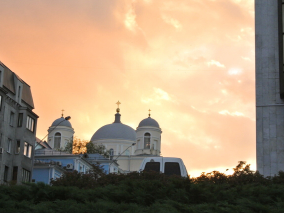
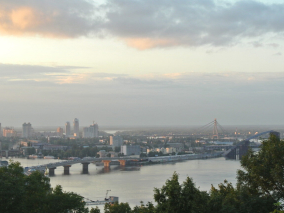
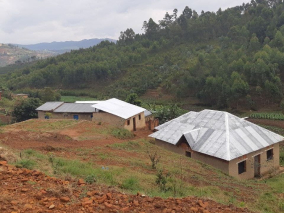
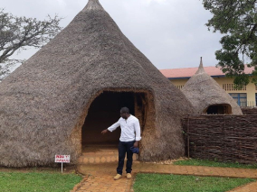
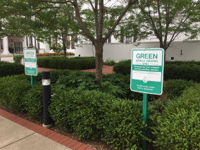
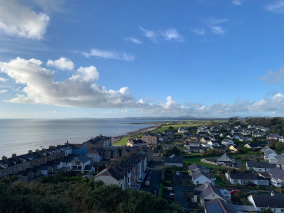
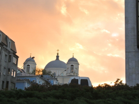
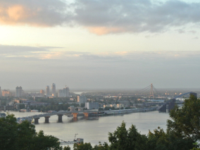
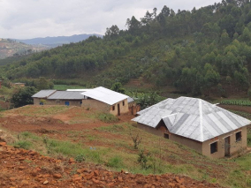
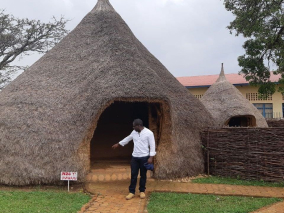
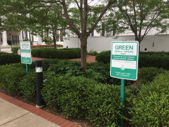
Kiev, Ucrânia
Artista
Natalia Dolgushina, produtora de conteúdo

Kyev (ou Kiev), capital da Ucrânia, é uma grande cidade localizada às margens do rio Dnipro. É claro que ninguém em sã consciência nadaria no rio, a menos que tenha crescido lá, e nesse caso provavelmente já tentou em algum momento. Os verões são quentes aqui e os invernos são frios, mas o outono e a primavera são absolutamente incríveis.
A cidade em si é uma mistura de arquitetura pré-revolução, pós-guerra e soviética, toda ela salpicada de varandas modificadas. Se estiver na margem direita do Dnipro, a paisagem é difícil de percorrer para quem anda de bicicleta e quem usa salto. A margem esquerda é considerada muito menos interessante e prestigiosa, mesmo por pessoas que vivem na periferia da margem direita.
Criccieth, País de Gales
Artista
Steffan Warren, editor-chefe
Kseniya Glagoleva, gerente de projeto
A ruína medieval do Castelo de Cricieth tem vista para a cidade abaixo de uma rocha que se projeta para o mar. Acredita-se que tenha sido construído por Llewelyn, o Grande, no século XIII. Cerca de 900 anos depois, a auto-intitulada *Pérola de Gales nas margens de Snowdonia* tornou-se um destino turístico popular durante os meses de verão.
A uma curta caminhada da estrada do castelo, você pode desfrutar do melhor sorvete do mundo no Cadwalader's, cujo ingrediente secreto, segundo rumores, são algas marinhas de origem local. Outra reivindicação à fama é o fato de que Criccieth ganhou o prêmio *Wales in Bloom* por cinco anos consecutivos por suas espetaculares exibições florais pela cidade. Foi também a casa de David Lloyd George, o único galês a ocupar o cargo de primeiro-ministro do Reino Unido.
Berea, EUA
Artista
Travis Turner, autor e editor
Berea é uma pequena cidade localizada na parte central do Kentucky. A cidade é cercada por belas florestas e campos. É conhecida como a capital do artesanato do estado, e os visitantes encontrarão muitas oportunidades de compras: lojas com bijuterias artesanais, velas, artigos de madeira, galerias, ateliês de vidro e muito mais. A cidade realiza um festival anual que celebra o "pão de colher", um prato local feito com pão de milho e servido com uma colher de pau.
No entanto, provavelmente é mais conhecido pela faculdade local. O Berea College foi fundado em 1855 e foi o primeiro colégio no sul a ser racialmente integrado, bem como o primeiro a ser misto. De forma um tanto singular, não cobra mensalidades - todo aluno recebe uma bolsa de estudos integral.
Muramvya, Burundi
Artista
Grevisse Kenguruka, editor técnico
Muramvya é uma das 18 províncias de Burundi. Na era do reino, Muramvya era a capital real e em 2007, por causa de sua paisagem cultural e natural, foi adicionada à Lista Provisória do Patrimônio Mundial da UNESCO. Está localizada no centro de Burundi, entre as capitais políticas e econômicas do país.
O clima é bastante frio à noite, mas durante o dia, você pensaria que está no céu. A 2.665 metros (8.743 pés) acima do nível do mar, o Monte Teza é um dos lugares mais frios da província. Mas essa brisa fresca permite uma das maiores plantações de chá e café do país, que representam a maior parte das exportações do Burundi..
O Parque Nacional de Kibira, uma das maiores reservas de vida selvagem para macacos, se sobrepõe a quatro províncias, incluindo Muramvya. Este Parque Nacional encontra-se no ápice das belas montanhas do Congo-Nile Divide, variando entre 1.550 e 2.660 metros de altitude. Está repleta de uma bela vegetação e fonte para os vários rios e riachos que fornecem água em todo o país.
Volta Redonda-Brasil
Artista
Erick da Silva André
Volta Redonda é um município brasileiro do estado do Rio de Janeiro, Região Sudeste do país. Situado no Sul Fluminense, também é conhecido como a "Cidade do Aço", por abrigar a Companhia Siderúrgica Nacional (CSN)
A cidade é limitada pelos municípios de Barra Mansa (Norte, Noroeste, Oeste e Sudoeste), Barra do Piraí (Nordeste), Pinheiral e Piraí (Sudeste e Leste), e Rio Claro (Sul). Juntamente com os municípios de Barra Mansa (7 km de distância), de Pinheiral (15 km de distância) constitui uma aglomeração que ultrapassa os 460 mil habitantes, conforme as estimativas do Instituto Brasileiro de Geografia e Estatística para 2009.
É comum, no inverno, o fenômeno da inversão térmica, causado pela camada de poluição que permanece sobre a cidade, formando uma barreira à penetração dos raios solares, diminuindo a insolação e impedindo a liberação do calor e das novas cargas de poluentes lançados a cada dia.
Visite-Nos
Durante todo o ano Galeria de Arte Practicum 404, Avenida Tim Berners-Lee.